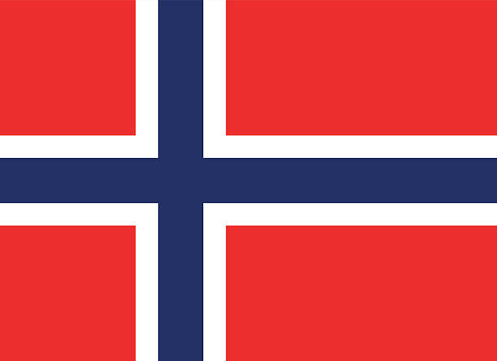
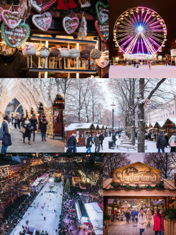

Bare Norske Greier
(Det er kanskje best om du forstår Norsk hvis du skal lese denne netsiden)

En dag i Olso:
Slottet-
På Slottet bor Kongen og Dronninga. Resten av kongefamilien har kontoer der men de bor andre steder. Hver gang jeg er i Norge så går opp hovedgata til slottet og det er ett av mitt favoritt rutene. Rundt slottet det er et park med veldig fine trær og en stor dam. Hvis du vil også inni slottet så har de omvisninger nesten hvert dag. Hvis du vil oppleve slottet i full stemning så burde du være med i 17. mai toget. Du kommer deg ikke inn i slottet eller velding nærme, men det er vært det for å se feiringen. Da for du også se Kongefamilien fordi de kommer til å stå på balkongen og vinke.
Operahuset-
Operahuset ble ombygget på slutten av 90 tallet og åpnet i 2008. Der kan du gå og se balletter, musikk, skuespill, og operaer. Det er nesten alltid noe spennende som foregår. Operahuset er et av de mest kjente bygningene i Norge på grunn av den unike arkitekturen. Den er lett å se fordi den er rett i sentrum ved Oslo S og ikke langt fra Karl Johans Gate. Om sommeren er det mange som svømmer i fjorden som operahust er bygget på. Hvis ikke du skal se en forestilling der, så anbefaller jeg fortsatt at du går inni fordi arkitekturen der er meget fint og.
Badstuer-
Med Operahuset i bakgrunnen og solen i himmelen stuper folk oppi fjorden. Dette er Oslo Badstu-foretning. Du kan velge å leie en privat badstu eller dele med andre for litt mindre penger. Det er ganske mange ulike badstuer å velge mellom og noen har tak som du kan hoppe av. Fjorden er ofte veldig kaldt, men å gå rett fra badstuen til det kalde vannet og så bak til badstuen er deilig. Når du er ferdig så har de dusj og garderober så du kan skylle deg og være klar til å fortsett å gå rundt i byen. Oslo badstuene er en opplevelse du må ikke hopp over.
Akerhus Festning-
Bygget i 1290, Akerhus Festning har vært en stor del av Norge's historie. Den var brukt mange ganger for å forsvare mot Svenskene og det var der henrettelser fra andre verdens krig var fullført. I dag er parken åpnet i nesten hele dagen for folk å gå rundt. Noen museumer ligger i parken sånn som Norges Hjemmefrontmuseum. Hans Majestet Kongens Garde står vakt på festningen. Akerhus Festning er en skikkkelig fint sted med mye gammel arkitektur og grønne trær.
Is og Sol på Sørenga-
Når solen er sterk og dagene lange, ta med deg badedrakt og dra på Sørenga. Her kan du gå ut på soldekken og ligge så lenge som du hvil. Hvis du blir varm er det bare å hoppe oppi vannet enten fra dekket eller stupetårnet. Bare ett par skritt fra sjøen ligger et Paradis gelateria med mange gode smak hvis du blir sulten. En ting on tenke på er at Sorenga er veldig populær så det kan være mange folk, men det er verdt det. Enten før eller etter, så anbefaller jeg at du går rundt området fordi det er mange fine bygninger og god mat.
Skøyting og Snø på Jul i Vinterland-
Kanskje den mest magiske opplevelsen i hele Oslo, Jul i vinterland transporterer deg til en verden av skøyting, snø, varm kakao, og fersk-bakt smultringer. Fra en snø dekket merked til lyset opp pariserhjul, det er noe til alle. Mitt favoritt ting å kjøpe fra markedet er en fersk, varmt smultring. Hvis du vil på skøytebanen så må du ikke bekryme deg om å finne skøyter fordi de har de til å leie. For full effekt så anbefaller jeg at du går på kvelden når alle de fine lysene er synnelig og noe varmt å spise høres spesielt godt ut.

I en rom med fire hjørner sto det fire greier. I den ene hjørna sto det ett troll, i den andre sto det ett lur svenska, i den tredje sto det ett nordmann, og i den fjerde sto det ett en drage. Midt i rommet sto det ett kjokolade kake. Hvem får kake?
Svar: Nordmannen selvfølgelig. Troll, drager, og lure svensker fins jo ikke!